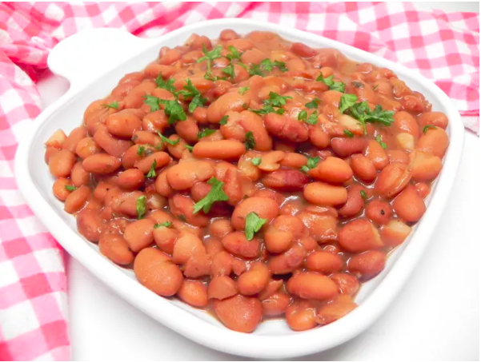

Pinto Beans

Description
Southern style pinto beans.
Ingredients
- 2 cups dried pinto beans
- 4 quarts of water
- 4 (1 ounce) slices of fatback
Steps
- Wash pinto beans thoroughly and place in a large stockpot.
- Add all ingredients.
- Bring to a rolling boil over high heat.
- Reduce heat to a simmer and cook for 3 to 4 hours. Add water throughout cooking as needed to prevent beans from going dry.